Як налаштувати швидку команду для сповіщень
Ваш банк і так сповіщає про кожен платіж карткою. Автоматизація у «Швидких командах» може передати це сповіщення Копійці — вона прочитає суму й магазин просто на телефоні та запише платіж. Потрібна iOS 27. Налаштовується один раз.
На симуляторі, з якого ці знімки, немає застосунку банку, тож замість нього — «Повідомлення».
1. Швидкі команди → +
Відкрийте «Швидкі команди» й торкніть + унизу. Якщо просить описати команду, торкніть «Редагувати».
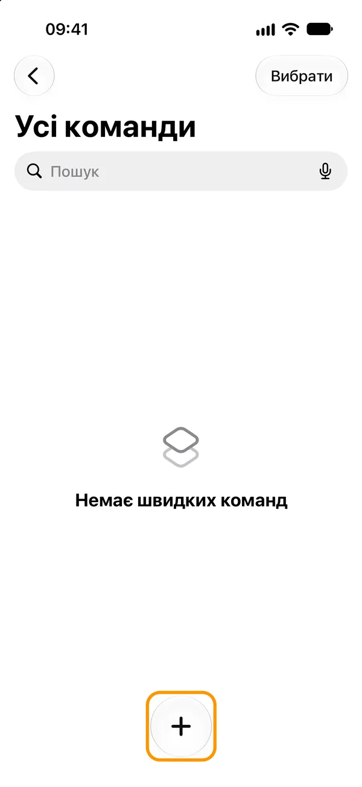
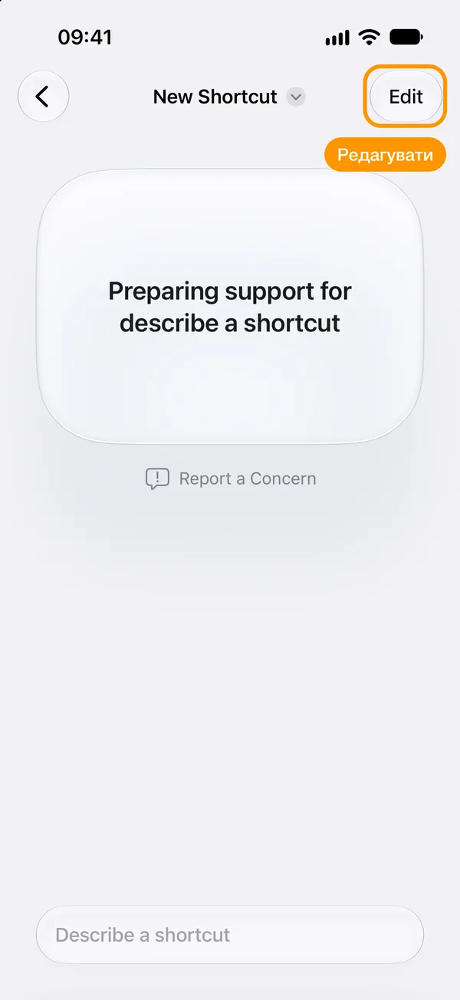
2. Автоматизація → Сповіщення
Торкніть «Автоматизація» під полем пошуку й знайдіть «Сповіщення».
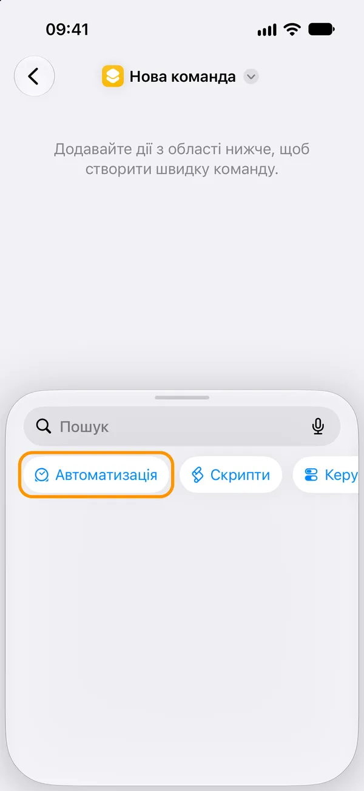
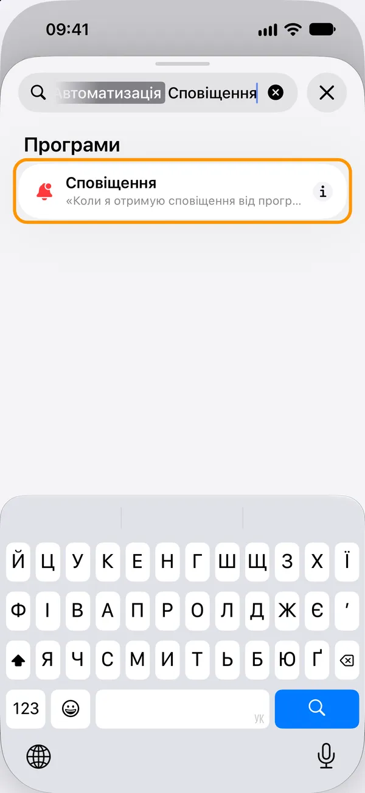
3. Виберіть застосунок банку
Торкніть «Програма» й знайдіть його. Банк не надсилає сповіщень? Виберіть Wallet (Apple Pay); + додає ще одну програму.
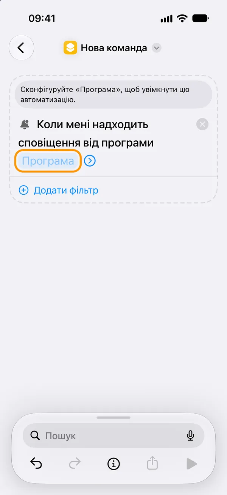
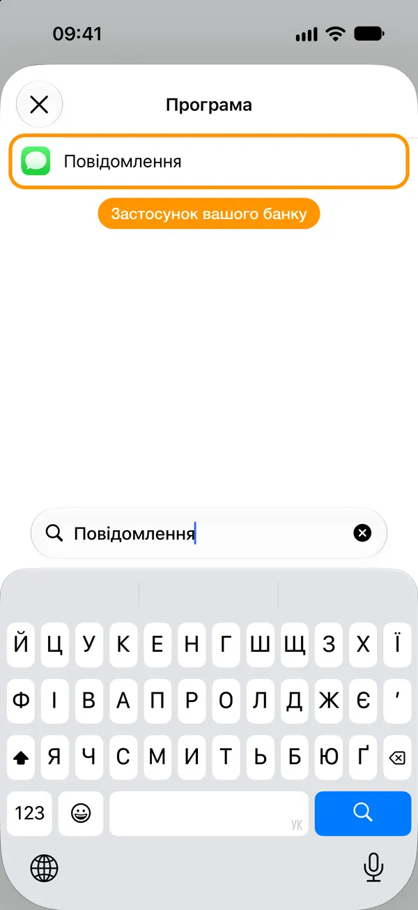
4. Фільтр: «Повідомлення» містить слово
«Додати фільтр», замініть «Назва» на «Повідомлення» й введіть слово, яке є в кожному сповіщенні про платіж, наприклад «Сума».
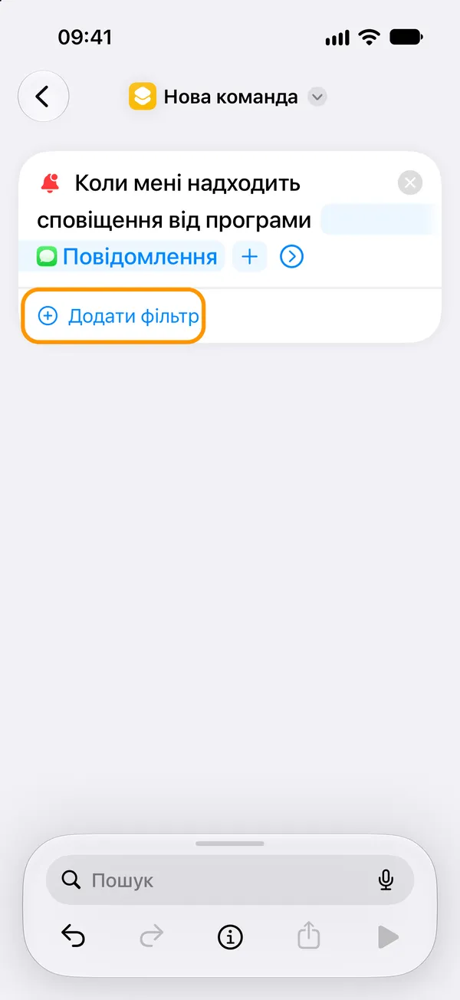
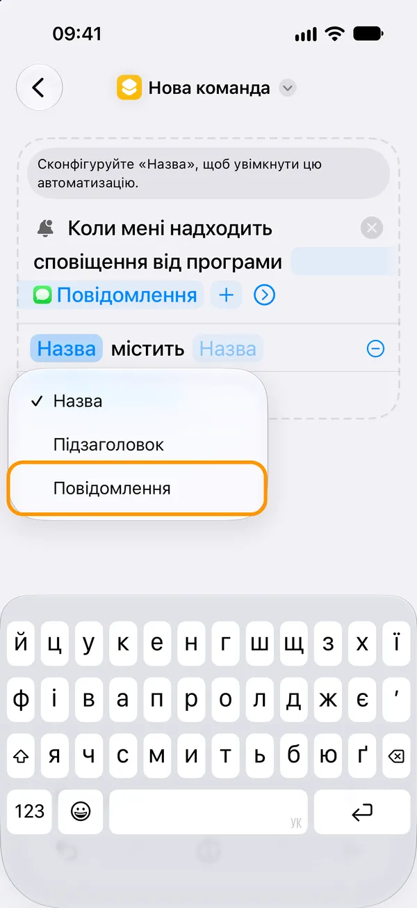
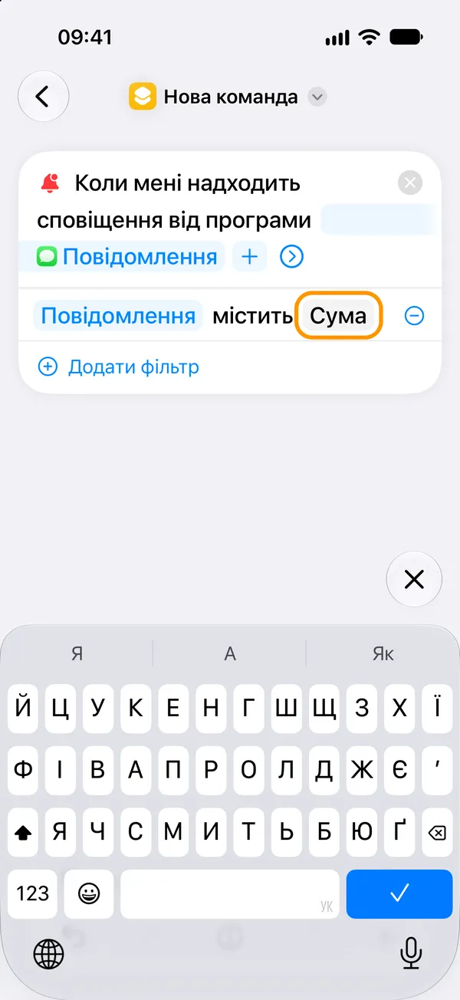
5. Хай працює сама
Торкніть стрілку біля програми: «Автоматизація» увімкнена, «Сповіщати» вимкнено.
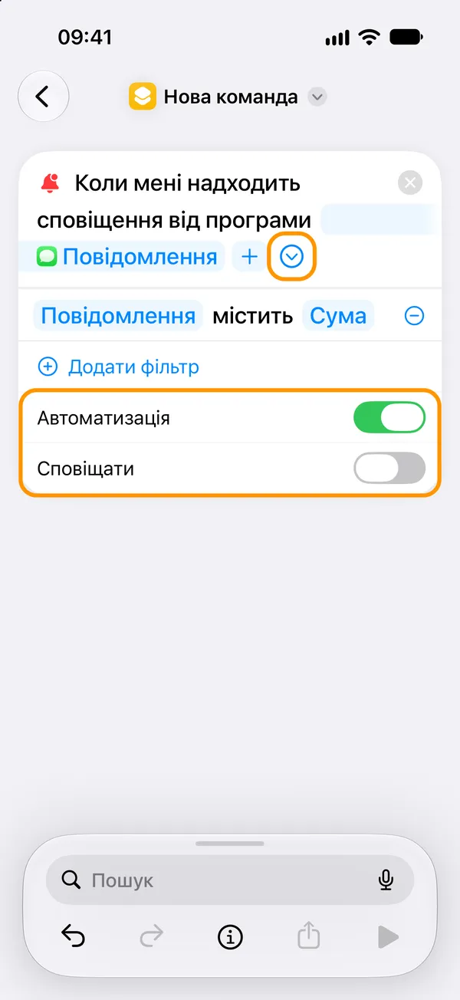
6. Додайте «Записати платіж зі сповіщення застосунку»
Знайдіть Kopiyka в полі внизу. Дія може бути підписана англійською: «Log payment from an app notification».
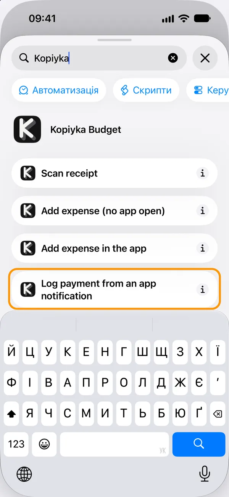
7. Вставте «Сповіщення» в поле
Торкніть «Сповіщення», потім «Вибрати змінну» й «Сповіщення» під тригером.
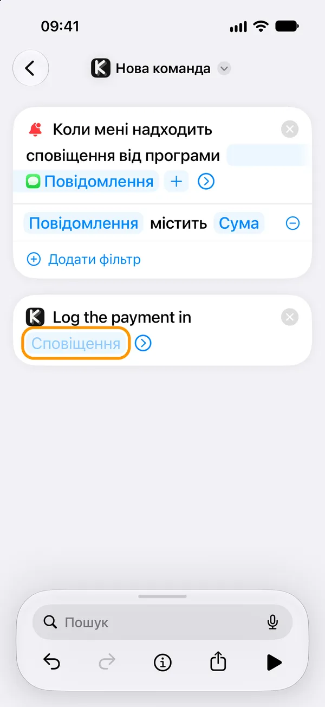
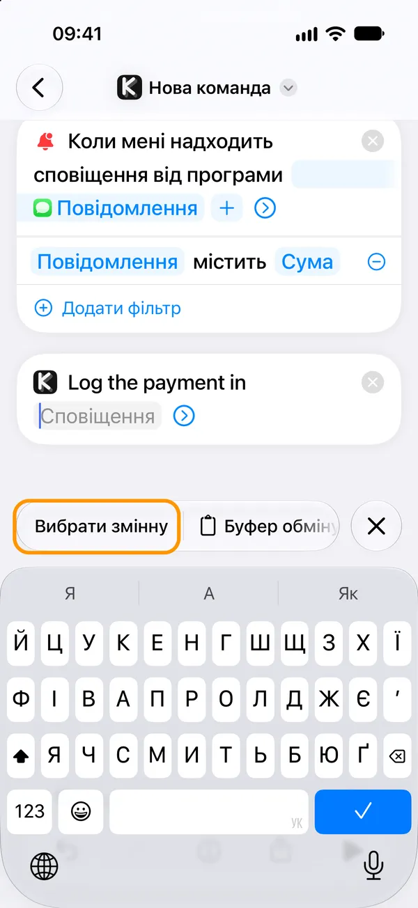
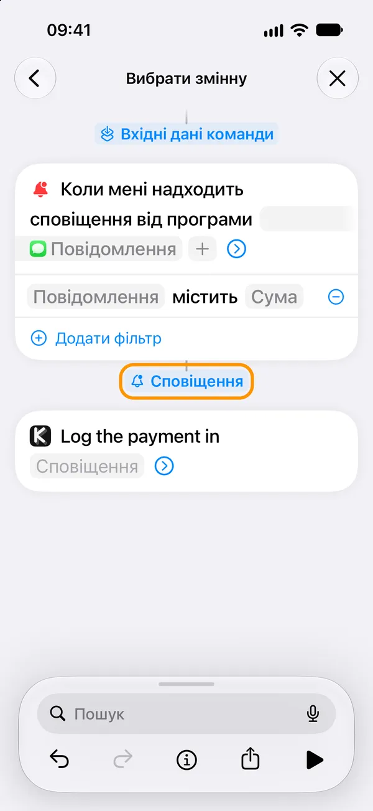
8. Необовʼязково: де ви платили
Торкніть стрілку, потім «Розташування» → «Вибрати» → «Поточне місце» → ✓. «Рахунок» лишіть порожнім: Копійка вибере його за карткою чи валютою.
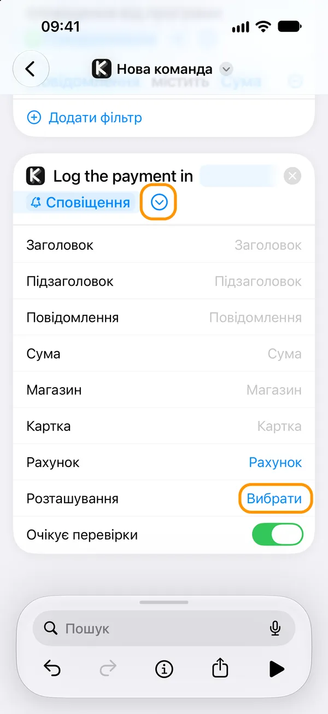
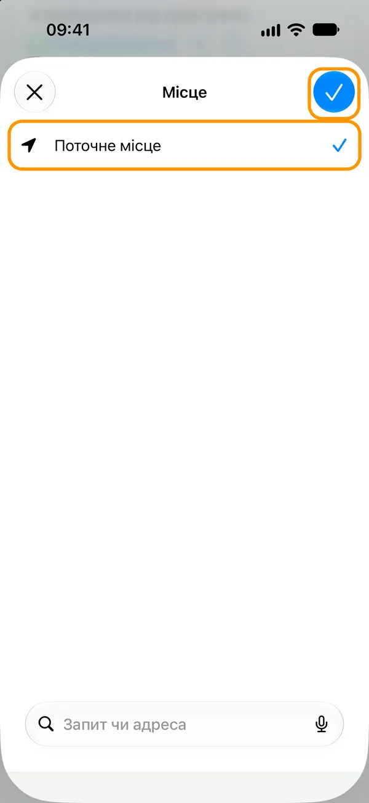
9. Торкніть ‹ — і готово
Команда зберігається сама. Вона в розділі «Автоматизація», де її вимикає перемикач.
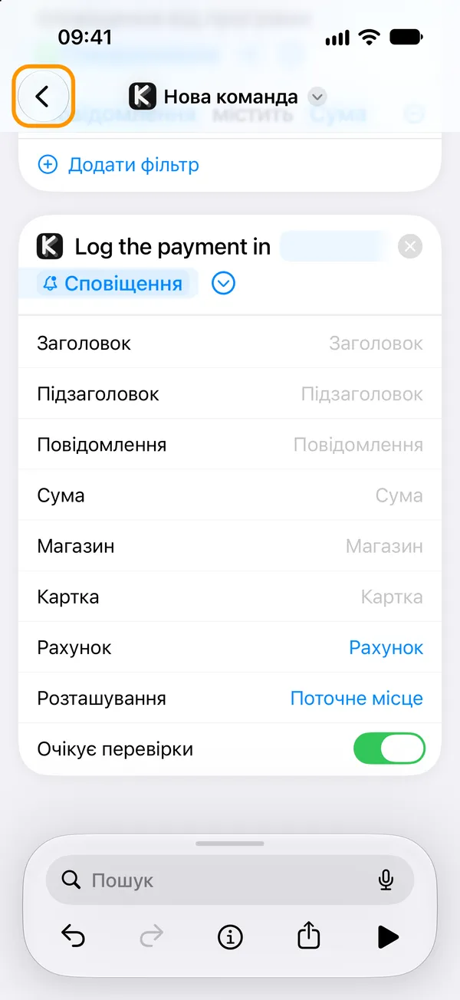
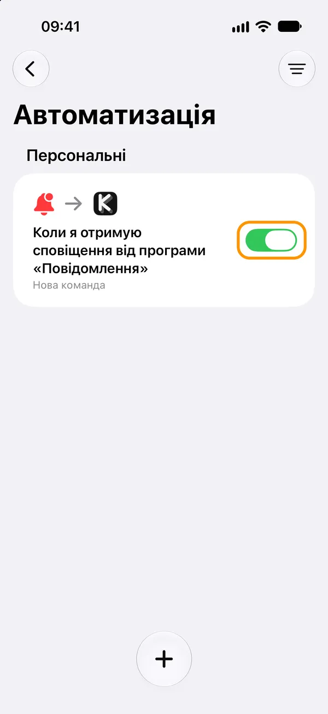
Тепер заплатіть за щось. Магазин, який ви вже записували, запишеться сам; новий чекатиме в «Очікують» на перевірку. Сповіщення, які не вдалося прочитати, зберігаються в «Налаштування» → «Налаштування швидкої команди» → «Журнал сповіщень», щоб потім навчити Копійку їхнього формулювання.